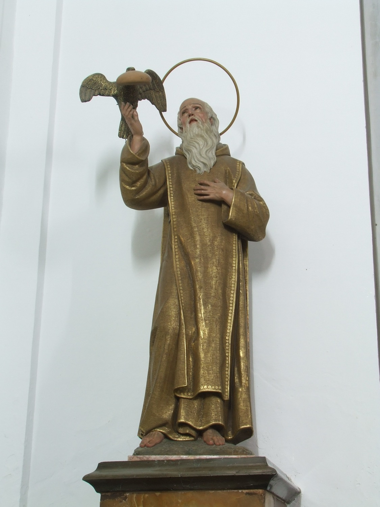

San Pablo de Tebas (s. III), también conocido como san Pablo el Ermitaño, fue el primer ermitaño cristiano. Según la leyenda, huyendo de la persecución de Decio, se retiró de joven a vivir en una cueva del desierto de Tebas, donde durante los primeros cuarenta años se alimentó exclusivamente de los dátiles de una palmera y del agua de una fuente, y más adelante de un trozo de pan que diariamente le llevaba un cuervo. Poco antes de morir, su existencia fue revelada en sueños a san Antonio Abad, que lo visitó.
En esta escultura, obra de Guillem Galmés, de 1924, se le representa como un anciano, ya que según la tradición vivió 113 años, acompañado del cuervo con el pan en el pico que lo alimentaba.